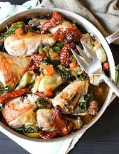

Home
Tomato

Artichoke and Sun-Dried Tomato Chicken
Chicken is browned, and then cooked with artichoke hearts, tomatoes, and sun-dried tomato pesto in this simple,
elegant recipe.
Ingredients
- 4 skinless, boneless chicken breast halves
- salt and pepper to taste
- 2 teaspoons olive oil
- 1 (14.5 ounce) can diced tomatoes with green peppers and onions
- ¼ cup sun-dried tomato pesto
- 1 (14 ounce) can artichoke hearts in water, drained and quartered
Steps
- Season both sides of chicken breasts with salt and pepper. Heat oil in a large skillet over medium-high
heat. Place chicken in skillet; cook, turning once to brown each side. Remove chicken from pan, and set
aside.
- Pour tomatoes into pan; cook for 1 minute, stirring constantly, and incorporating any brown bits from bottom
of pan. Stir in pesto and artichokes, and return chicken to pan. Cover, and reduce heat to medium. Simmer
for 5
to 10 minutes, or until chicken is cooked through.